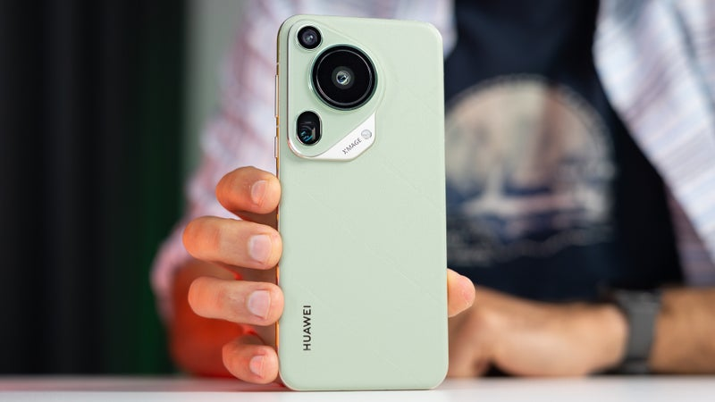
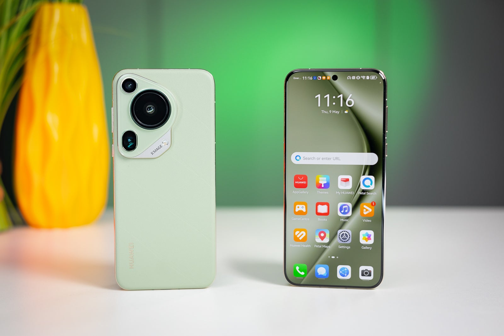
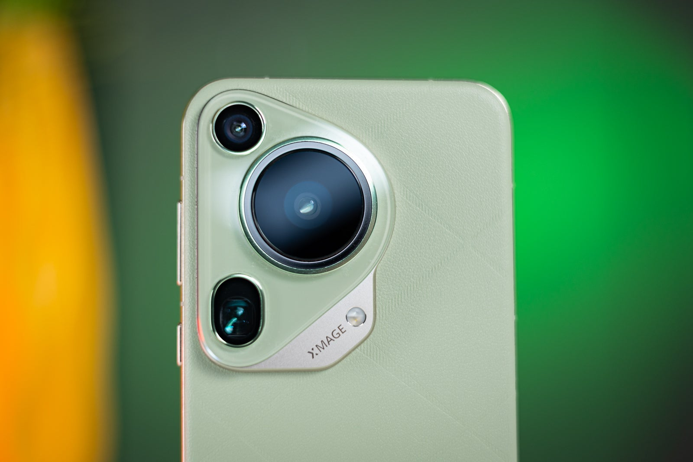
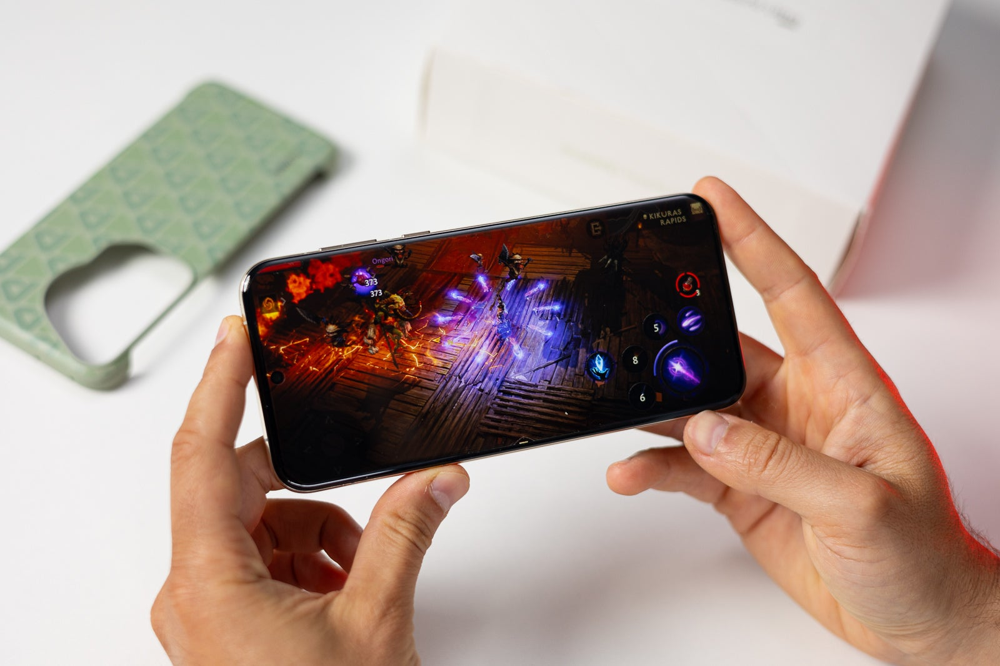
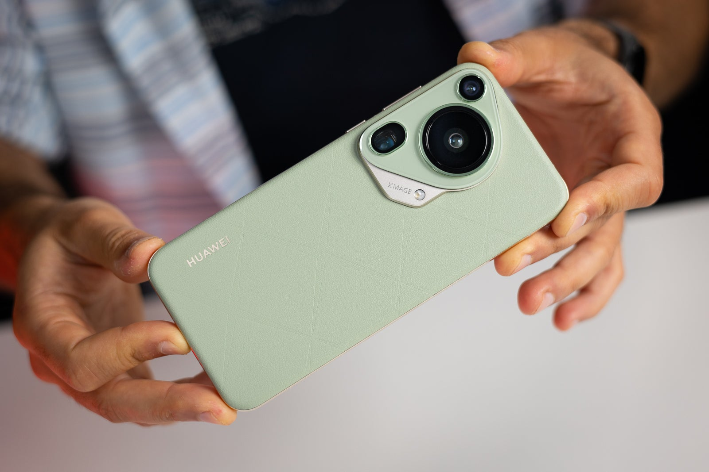

Huawei Pura 70 Ultra Review: High Hopes
Huawei Pura 70 Ultra Intro
Sometimes one needs to sever its ties to the past to achieve purity of soul. Despite the overly dramatic and pretentious intro line, the Huawei Pura 70 Ultra aims to do just that. This phone is a spiritual successor to the Huawei P60, and to celebrate the 12th anniversary of the P-series, Huawei decided to purify things, so to speak.
This one is an oddball, really. On one hand, it has a very powerful, fast, and quite unique camera system. On the other hand, some of the hardware inside is stuck in the past due to the infamous US ban.
Add to the mix a very interesting design, a completely different ecosystem, and a pretty hefty price tag on top of the limited availability, and you'll get the level of complexity this phone carries. Huawei says it's a new era for the P-series, focused on imaging technology, aesthetic design, and original style.
Is the Pura series going to be a phoenix rising from the P-series ashes? And is it capable of competing with the big boys, given the inherited genetic flaws of its predecessors? We're here to find out!
Huawei Pura 70 Ultra Design & Display
The Huawei Pura 70 Ultra sports a unique design. The camera bump is like nothing we've seen so far, with a pretty complex shape and a clear distinction between the different cameras. Glass and metal meet to create this peculiarity, and you can spot the XMAGE logo next to the LED flash.
The back of the phone is made from a silicone-polymer material, reminiscent of eco-leather. It's papery to the touch and fends off fingerprints like a criminal on the run. The downside is that you can scratch or damage it if you decide not to use the included back cover.
The phone has an aluminum frame that's rounded, and it feels nice in the hand. The back and front are also slightly curved; we're tempted to call this 2.5D glass, but there's a tad more curvature. There are three colors available: Green, Brown, and Black.
The Huawei Pura 70 Ultra comes with a 6.8-inch OLED display with a resolution of 2844 × 1260 pixels. This translates to 460PPI pixel density, the same as the iPhone 15 Pro Max. The screen is a LTPO panel, which means it can go from 1Hz to 120Hz dynamically (with everything in between), and it's covered by Huawei's proprietary Kunlun Glass Armor.
Huawei says the display can shine with 1,500 nits of brightness, and in our test, it managed almost 1,000. A pretty decent result, up there with other flagships. Bear in mind that the difference between 1,000 nits and 1,500 nits of peak brightness is not as big as between 300 and 800. It's just how our eyes work, with their little rods, cones, and ganglion cells.
The colors are extremely accurate at 1.26 average deltaE, and the minimum brightness and color temperature values are also pretty good.
There's highly customizable always-on mode, system-wide dark mode, as well as various other settings to tune the screen to your liking. You can let the phone manage the refresh rate in Dynamic Mode or force a high refresh rate of 120Hz. There's also a standard 60Hz mode, which we presume nobody would ever use.
Huawei Pura 70 Ultra Camera
We arrive at the most interesting part of the equation, the camera system. For many years, Huawei phones have been at the forefront when it comes to photography. The Pura 70 Ultra claims to be no exception. It features a potent main camera with an undisclosed 1-inch sensor inside and a variable F1.6–4.0 aperture.
Huawei even went through the trouble of fitting a mechanical actuator that physically extends the lens to be able to use that one inch sensor to the fullest. This pop-out camera also makes a cute noise, but is it good enough to face other camera phones in the industry?
The ultrawide and telephoto cameras are somewhat in the background here, but there's a new tele-macro mode (getting more and more popular) on the periscope zoom camera, as well as a physical aperture assisted portrait mode. Time to check out some samples.
Huawei Pura 70 Ultra Software
The most problematic area of all Huawei phones in the past couple of years has been the software department. The international version of the Pura 70 Ultra comes with EMUI 14 onboard (Chinese units ship with Harmony OS 4), and, as you might imagine, there's no Google Services present.
Now, there are ways around this, but most of them require some extra effort, and some are in the gray area of legality. There are HMS versions of Google's apps you can use, such as Petal Maps, Huawei Browser, Music, and Wallet, but it requires moving to a completely new ecosystem.
There are some interesting tidbits here and there, and Huawei isn't impartial to the AI game either. There's a smart assistant called Celia, and you can make her do various things for you. There are a bunch of features with the AI moniker before their name, such as AI Voice, AI Search, AI Touch, and AI Lens. They are not very sophisticated. AI Voice is Celia, AI Lens is a barcode scanner and translator, and it uses object recognition. AI Touch lets you tap with two fingers on an object to get a contextual search.
The Huawei Pura 70 Ultra will get two major OS updates and three years of security patches.
Huawei Pura 70 Ultra Battery

The Huawei Pura 70 Ultra comes equipped with a 5,200 mAh battery. Sadly, we couldn't carry out our usual tests due to the platform restrictions. We can give you a subjective evaluation of the battery life, however, and it's quite good.
We used the phone quite heavily during our test period, trying to emulate our test in real life as closely as possible, playing the occasional game, browsing, and watching videos. The phone was charged to 100% in the morning, and by the end of the day, we still had around 40–50%.
And because charging is so fast on this device, we let it sit through the night and still got 30–35% in the morning. We would say it's a day-and-a-half phone, and you can push it to two days if you're careful, but there's no need because the 100W fast charging will top up the phone in mere minutes.
The phone supports wireless charging with incredible speeds (80W) but you need Huawei's proprietary charger to get the most out of it. The Pura can also charge other gadgets with up to 20W in reverse wireless charging mode, so there's also that.
Should you buy it?
The Huawei Pura 70 Ultra is a tough sell. As a camera phone, it is great; the one inch sensor produces impressive shots both in broad daylight and in more murky and dark environments. What the Huawei Pura lacks is current hardware and more popular software, and we just can't look the other way.
Other camera phones, such as the Xiaomi 14 Ultra or the Honor Magic 6 Pro, will fare much better in this competitive market, as they offer the latest hardware and full GMS support. The asking price of 1,500 euros doesn't work in Huawei's favor either.
At the end of the day, only hardcore Huawei fans and people who want to be outside the mainstream ecosystems, would probably consider getting this phone.